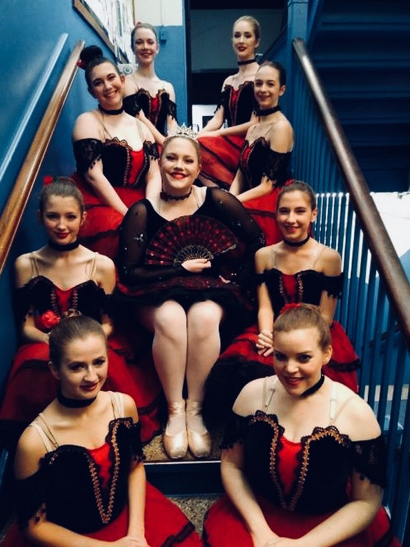

I absolutely love all dogs. I have a dog of my own named Baxter, and he is
the cutest dog I've ever seen. This, however, is not Baxter. This is Bailey, my aunt's
dog. My aunt lives on a farm, and this was my last day visiting when I snapped this
photo of Bailey. Another thing I love is flowers. Whether it's taking photos of flowers or
just looking at them, it's a great thing to take part in.

I absolutely love dance. It's been apart of my life since I was three years
old. This is my friends and I backstage, posing for a picture during the intermission of
our 2017 "Nutcracker". Finally, and probably most importantly, I love theater. Theater encompasses
so much of what I enjoy. Writing, reading, dancing, singing, photography, and art in general.
It has been such a monumental part of my life, and has made me the person I am today.
Without theater, I wouldn't have made half of the friends I currently have. top